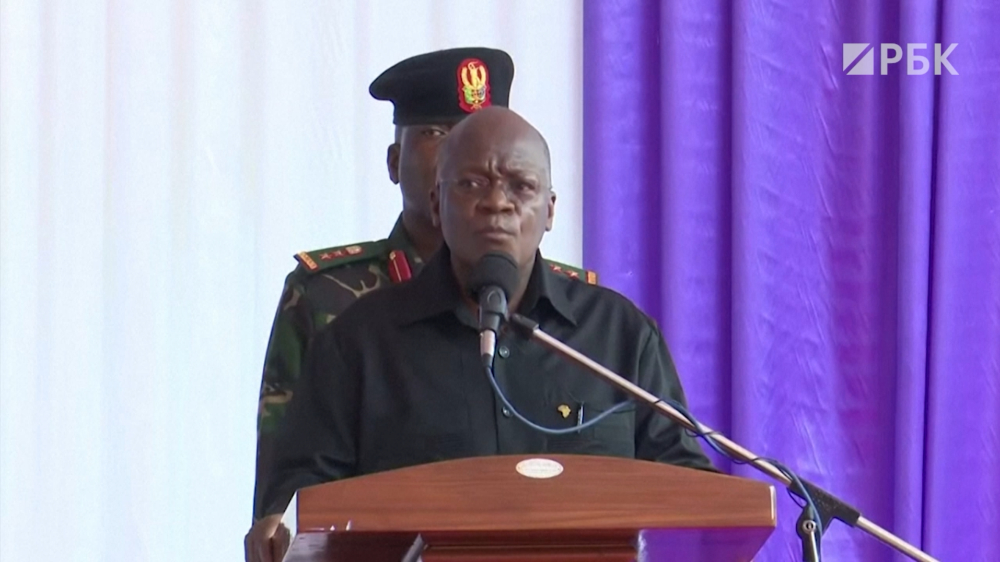

Умер отрицавший наличие в Танзании COVID-19 президент Джон Магуфули
Ранее местная оппозиция сообщила, что политик заразился коронавирусом и находится в тяжелом состоянии.Магуфули отрицал научные способы борьбы с пандемией и заявлял, что в его стране вируса нет
Умер 61-летний президент Танзании Джон Магуфули.Об этом сообщила вице-президент страны Самиа Сулуху Хассан, передает государственный телеканал TBC.
Ранее лидер оппозиции Танзании Тунду Лиссу заявил, что президент заразился коронавирусом и его госпитализировали в соседней Кении.
Магуфули отказывался вводить в стране локдаун и хвалил тех, кто не носит медицинские маски.Вместо научных способов борьбы с распространением инфекции президент просил жителей Танзании молиться для победы над COVID-19 и утверждал, что «коронавирус — это дьявол».
Власти республики в апреле 2020-го прекратили публиковать официальную статистику заболевших, что не мешало Магуфули неоднократно заявлять, что его страна свободна от инфекции, и приглашать в республику туристов.Так, летом 2020-го политик сообщил, что бог благополучно «изгнал» коронавирус из Танзании.
Президент также не доверял вакцинам от вируса, поскольку их разрабатывают европейцы.Лечить инфекцию, помимо молитв, политик советовал домашними средствами, например травяными ингаляциями.
С конца февраля Магуфули перестал появляться на публике.Власти страны не раскрывали какую-либо информацию на фоне обвинений оппозиции в том, что президент тяжело болен из-за коронавируса.Лидер танзанийской оппозиции Лиссу 15 марта со ссылкой на свои источники сообщил, что президента на фоне COVID-19 подключили к аппарату искусственной вентиляции легких.
Магуфули родился 29 октября 1959 года на северо-западе республики.Получил педагогическое образование по специальностям «Математика» и «Химия».Учился не только в местных университетах, но и в Салфордском университете Великобритании, где в 1994 году получил степень магистра химии.
В 1995 году Магуфули впервые выбрали в парламент региона, где он родился, тогда же политика назначили заместителем министра по делам строительства.Позже он успел побывать на должностях министра труда, министра строительства, министра развития животноводства и рыболовства.Президентом Танзании Магуфули выбрали в 2015 году.Он стал пятым по счету президентом страны.
По данным Всемирной организации здравоохранения (ВОЗ) и американского Университета Джонса Хопкинса, в Танзании с начала пандемии выявили 509 заболевших коронавирусной инфекцией, из них умер 21 человек.
Posted On: 2021-03-17T20:57:00

Content Date: 2021-03-17
Download Date: 2021-06-20
Document ID: L0C04D3N0